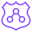

Management Account
Organizations, Control Tower, 결제 통합. 워크로드와 보안 도구는 두지 않음
Security OULog ArchiveAudit로그 삭제, 변경 차단
Infrastructure OUNetwork HubShared Services네트워크 변경 권한 분리
Workloads Prod OU업무계 Prod채널계 Prod서울 리전 외 차단, 암호화 강제
Workloads NonProd OU업무계 Dev업무계 Stg운영 데이터 접근 차단
Sandbox OU개발자 SandboxPoC Sandbox예산 한도, 사내망 연결 차단
Policy Staging, Suspended통제 검증용폐기 대기신규 통제 사전 검증, 모든 작업 거부
관리 계정에는 SCP가 적용되지 않습니다
그래서 관리 계정에는 워크로드를 두지 않고, 접근 인원을 최소화합니다.
업무계, 채널계 명칭은 예시이며 실제 분류는 OK저축은행 시스템 구성에 맞춰 조정. OU를 클릭하면 통제 예시가 표시됩니다.
Landing Zone
관리, 로그, 감사 계정과 OU 기본 구조를 자동 구성
Controls
예방, 탐지, 사전 통제를 OU 단위로 적용
Account Factory
표준 기준선이 적용된 신규 계정을 자동 발급
Dashboard, Drift
OU, 계정별 준수 현황과 기준선 이탈 탐지
배포 전
API 호출 시
배포 후 지속
사전적 Proactive
CloudFormation Hooks
예방적 Preventive
SCP, RCP, Declarative Policy
탐지적 Detective
AWS Config Rules
신규 통제 작성
Policy Staging OU 검증
운영 OU로 승격
서비스 영향 없이 통제를 늘리는 순서
OK저축은행 IDC
업무계 시스템사내 DNS
보안관제, SIEM
Network Account (서울 리전)
Direct Connect2회선 이중화
인터넷
Site-to-Site VPN백업 경로
Egress VPCNAT Gateway
Transit GatewayRT 분리: Prod, NonProd, Shared
Inspection VPCNetwork Firewall

Route 53 Resolver인바운드, 아웃바운드
Workload Accounts
Prod VPC업무계: IGW 없음
채널계
채널계
Shared Services VPC
NonProd VPCDev, Stg
사내 기존 대역중복 금지
AWS Prod
AWS NonProd
Shared, Network
향후 계정 확장 예약
온프레미스 연결
DX 2회선, 서로 다른 로케이션, VPN 백업. 절체 시험 정례화
라우팅 분리
TGW RT를 Prod, NonProd, Shared로 분리. 운영과 개발 간 직접 통신 차단
트래픽 검사
Inspection VPC에 Network Firewall 집중. 동서, 남북 트래픽 검사 증적
인터넷 경로
Egress VPC 중앙화, 업무계 IGW 금지. SCP 차단이 망분리 대체 통제 근거
AWS 서비스 접근
VPC Endpoint, PrivateLink로 인터넷 없이 S3, KMS 등에 접근
DNS
Route 53 Resolver로 사내 DNS와 양방향 조회